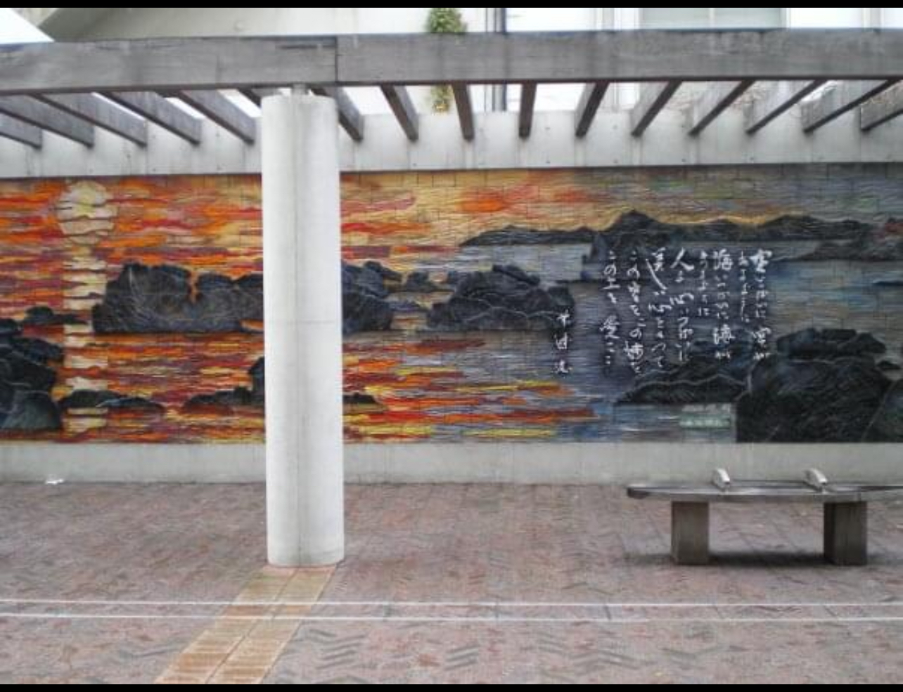
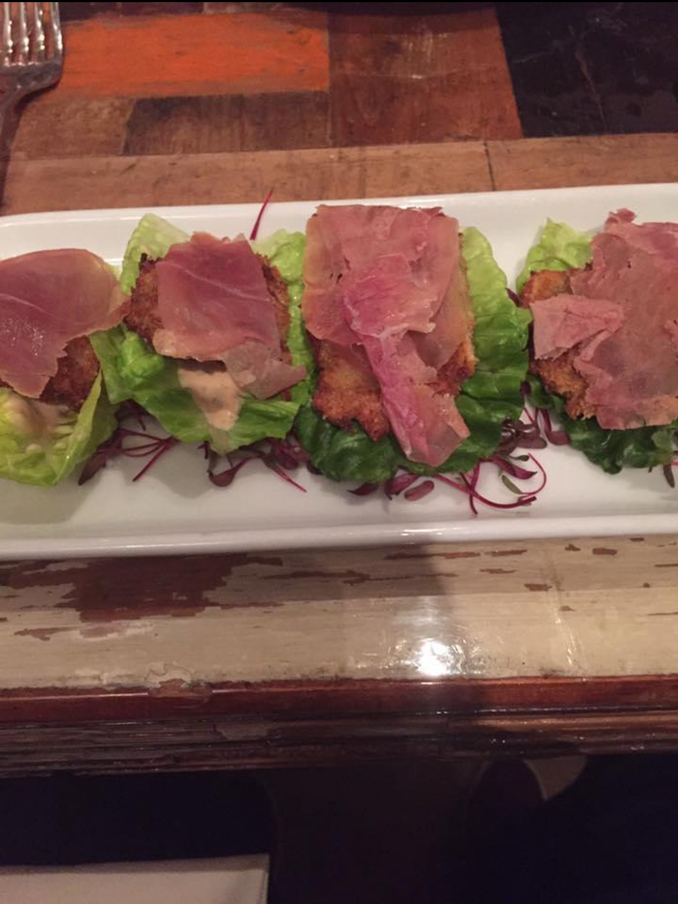

I enjoy being carefree.
Military
I served 8 years in the US NAVY. Overall wanted a strong foundation, but also wanted to meet great people. Everything has its up and downs and i will never change the fact that I joined .
Traveling
I enjoy traveling not just in America but all over where it's possible. Ever since i was young I wanted to explore. there are so many places, people and things to see.
Cooking
I have been cooking since my days in the military but it carried over once I went back to the civilian side.When it comes to food we all seem to be in a bubble, I like variety and not all always fine dinning you can find the best spots in not so nice areas but it makes it worth it, especially seeing a happy cook.